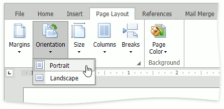

Adjust Page Settings
When changing page layout settings (such as page margins, page orientation, paper size), you can apply them to the whole document or set specific page layout settings for each individual section if your document is divided into sections.
Change Page Margins
- Click within a section whose page margins you wish to set.
Select the Page Layout tab, click the Margins button in the Page Setup group and select the margin sizes to be set for the current section from the invoked list.

Or specify page margins for the current section or the whole document via the Page Setup dialog.

Change Page Orientation
- Click within a section for which you wish to specify page orientation.
Select the Page Layout tab, click the Orientation button in the Page Setup group and select Portrait or Landscape from the invoked list.

Or set the page orientation for the current section or the whole document on the Margins tab of the Page Setup dialog.
Change Paper Size
- Click within a section for which you wish to set the paper size.
Select the Page Layout tab, click the Size button in the Page Setup group and select one of the standard paper sizes from the invoked list.

Or specify the paper size for the current section or the entire document on the Paper tab of the Page Setup dialog.